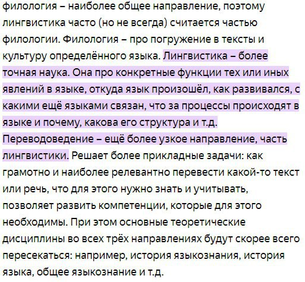
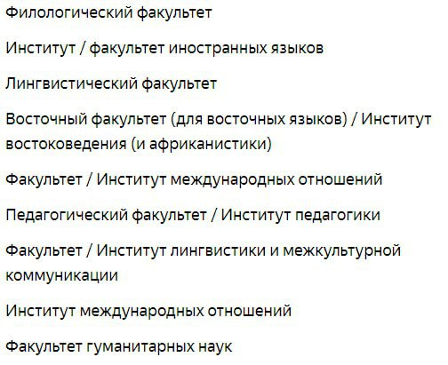

посты:
30.3.24.
А чё ес’и людям нравится время года от того, какое у них душевное состояние, от того, что у них на душе, от того, как здорова их психика, ведь года два-три назад ме оч’ нравилась зима, и, как раз, года два-три назад ме было оч плохо душевно, щас же, когда у мя плюс-минус усё хорошо, нравицца и хочецца лета, особенно хочецца мая, годик назад, когда токо начало всё налаживацца хотелось осени. Ме и щас нравицца оч’ она, но я б сказал, что эт’ токо сентябрь и октябрь, мне весной нравицца май, но март и апрель ваще ненавижу.
усё сложно, да.
31.3.24.
некоторые взрослые не понимают, почему мы нынешие подростки и дети не зацикленны на учёбу, а больше внимания уделяем общению и нашим хобби
потому такие , как они, и были зациклены на учёбе раньше, а сейчас на карьере.
конечно же, мы уже щас пожимаем плоды такого отношения: низкий уровень социализации и социальной жизни у населения в развитых стран
люди думают токо о образовании и карьере, у них нет социальной жизни
а ведь человек существо социальное, они теряют человечность, они страдают, болеют
моё поколение реакцию на тот образ жизни, что был у нашего старшего поколения, на то образ жизни, зациклившийся токо на се и своей будущей жизни, не затрагивая все сферы общества и потребностей
2.4.24.
я всегда говорю своим друзьям будьте счастливыми, не опускайте раньше времени руки, надежда умирает последней, ищите во всём хорошие, т.к. боюсь, что всё это приведёт к стрессу, который, в свою очередь, повлияет на здоровье и физическое, и психологическое. но я сам не счастливый. с людьми я счастливым, весёлый, радостный, но токо изза того, что я забываю о проблемах, они забываются, я не заостряю на них внимание, но это токо до того, пока я не останусь рдин, когда я опять стану собой, когда я не буду без маски.
состояние быть счастливым жля человека это ваще естественно? ведь жизнь полна опамностей, страха и горя, так почему мы всегда пвтаемся скрыть то, сто для нас естественно? нас прячуть от всего самого ужасного с детства, потому, когда дети вырастают, они не готовы к этомуи для их психики это шок и стресс, но это первый глоток жизни, настоящей и естественной
для людей не естественно быть счастливыми?
6.4.24.
если одеть это когото, а надеть это чтото, то обуть это когото, а набуть это чтото...
еси чтото можно надеть, значит это можно снять, еси когото можно одеть, значит его можно раздеть, тогда, еси когото можно обуть, значит его можно и разбуть...
еси одеть это когото, то значит его можно переодеть, а еси надеть это чтото, значит это можно перенадеть...
разуться — снять [обувь] — разбуть
переодеть — переодеться — перенадеться
11.4.24.
на первом фото тёмно-зеленом помечена территория, контролируемая КНР, а светло-зелёным претензии на другие территории
на втором же фото тёмно-зелёным помечена территория, контролируемая Тайванем (не признанным в России), а светло-зелёным его претензии на другие территории
Тайвань маленький да наглый
12.4.24.
ес юж корея лучше северной сестры, то поч мы не знаем лидера р.кореи, а правителя кндр знаем? 🤔
12.4.24.


13.4.24.

аргумент за ёфикацию
15.4.24.
роспропагандисты так много и яростно говорят о том что сша в дела каждой страны лезет, управляет мировой экономикой, рушит устрои многих стран и из эт слов складывается ощущение что роспропагандисты самые главные и верные патриоты йуасэй
15.4.24.
влияние общества на подростков часто недооценивается. на своём опыте могу заявить, что ес подростки на прямую и не желают какт влиять на др др, но эт происходит, напр, курение, я не раз пробовала электронные сигареты. я с первого же раза ничё не почувствовал и не понял поч лбди курят, но мя эт не остановило и я в дальнейшем пробовал, пока не прошло осознание, что ес я ничё не чувствую то лучше и не надо продолжать пробовать, т.к. потом может произойти так, что завтсимость появится. но даж так, изза того что мя окружали люли парящие желание и мысли попробовать не пропали.
был у ся друг, что курил сигареты, и тем самым тож влиял на мя, я оч хотел попробовать покурить, но так и не попробовал, к счастью. хотя в тяжёлый период я внутренне чувствовал что нужно закупить, что именно в эт момент, именно в эт состоянии, чтоб стало легче, конечно ж, я не курил, а всё прошло.
но вот ес общество так сильно на нас влияет, то поч даж в патриархальном обществе появляются представители ЛГБТК+ сообщества? не мож ли эт засчитать как то, что они не выбирают, что такими становятся, что эт всё биологически. ведь даж ес случаи, что у представителей ЛГБТК+ е внутренняя гомо-, транс-, и др фобии. общество влияет и оч даж сильно, так сильно, сто люди начинают ся ненавидеть, но ничё не могут с эт сделать, какт эт изменить
22.4.24.
“Лягушки дышат кожей и лёгкими. Именно потому что у них кожа покрыта слизью (которая обладает дезинфицирующим свойством) они могут дышать кожей. А дышат они не только лёгкими, потому что у них лёгких не хватает, чтобы насытить организм кислородом
Также и у человека. Носовая полость покрыта дезинфицирующей слизью. Кожа человека, кстати, может дышать, но процент дыхания кожей на столько мал, что его не учитывают”
23.4.34.
направление преобладающее сейчас в литературе — реализм. но он также разветвился, и современные направления в литературе прочно осваивают его братья: сюрреализм, критический реализм, метафорический реализм, магический реализм
28.4.24.
есть мнение, что глобализация убила культуру
сейчас музыка — очень пустая, бессмысленная, глупая да пошлая, фильмы ориентированы лишь на банальные да бытовые вещи и нет в них ни глубины, ни смысла, ни новизны, а книги могут быть низкопробными и со слабым словарным запасом автора. но зато вся эта бессмысленная херня может оказаться в трэнде года, самое просматриваемой, самой прослушиваемой, самой читаемой.
конечно, такие проблемы есть, но это скорее изза чёртовых капиталистов!, которых волнует лишь то, как можно заработать больше денег, а глобализация оказалась лишь благоприятной средой для них.
но она [глоб-ция] не убивала культуру.
“Но как же? Раньше, вот, был Моцарт, Бетховен, Пушкин, Шекспир — велике творцы прошлого, а сейчас кто? Моргенштерн? Инстасамка? Лия Стеффи? Александр Полярный?”
но нет. и ещё ращ нет! говоря о великих мы забываем о том, что это великое было не единственным что появилось в то время. вот, например, когда вышла лунная соната (бетховена), то была ли она самой прослушиваемой? нет. почему же? да потомучто тока дворяне да богатые люди могли слушать такое изза своего положения да и то не все слушали, хотели слушать, а ес и слушали, то не всегда понимали содержание и смысл. так что тогда чаще всего люди слышали? народные песни, обычные песни из народы, которые могли быть про тяготы сельской жизни, про бедность, любовь да бытовуху. напоминает эт современность, не так ли?
29.4.24.
постирония — эт самое лучшие что есть в юморе для мя.
она очень присуща зумерам, т.к. до этого такого явления не наблюдалось
а что ес постирония будет присуща тока зумерам? вдруг для следующих поколений она [п-и] будет не такой смешной и не главным поводом посмеяться?
и ес предположить, что так произойдёт, то я уже не понимаю следующей поколение, которое культурно ещё не появилось
парадокс? — (нет, просто мысленный эксперимент)
2.5.24.
в рай попадают тока безгреховные, не так ли? так. но мы за жизнь когота всё ж да убиваем, хотя бы муху, хотя бы жучка, хотя бы животное. получается в рай ни один не человек не попадёт. но ес всё ж люди безгреховные, что никого да ничто не убили за свою (короткую) жизнь. это младенцы. и ес в рай попадают тока младенцы (но не все, т.к. некоторые всё ж убивают своих матерей при родах), то рай — это ясли?!
3.5.24.
ес бог есть, то почему он позволил ся убить? ес бог есть, то почему наша вера ослаблему у нему?
не потому ли что он сам так захотел. не потому ли что он сам решил ся убить чужими руками не потому ли что мы сами его придумали и убили. когда он перестал нам нужен, когда пропала какаялибо ещё потребность в нём мы его убили
и последнее звучит очень в духе человечества
(да, я планирую когданить да прочитать ницще, т.ч. надеюсь эт не последний пост на такую тему)
4.5.24.
ответка на этот текст
но нейросети ведь создают картинки, видео, даже аудио сами. делают они из ничего и появляется чёт новое, то, чего раньше никогда не было.
не ужто тогда эт мнение ошибочно?
думаю что нет, ибо пусть нейросеть и создаёт новшество, но это делает по приказу, по команде и выполняет лишь запрос, а человек творит в своём начали, чтоб познать мир, что самовыразиться.
нейросеть не создаст чегото нового без человека, т.к. не будет команды, запроса. нейросеть лишь инструмент, что самостоятельно функционировать и существовать не сможет.
5.5.24.
не обесценивается ли сейчас слово “СВО”? не теряет ли оно своё первоначальное значение?
я так часто шутил, используя, это слова, что начал забывать вообще про то, что оно и в чём его значение.
тот же самое и насчёт Z и V.
щас я услышав или использовав их, я рассмеюсь, т.к. терь у мя они ассоциируются именно с юмором: шутками да мемами.
плюс песня “какой хороший день, чтоб пойти на СВО...” так же немного да поменяла и исказила начальное значение.
и терь я слышу эти слова от своих друзей да знакомых тока в этом значение, в юморе.
конечно, на восприятие слова повлияло моё окружение, оппозиционно настроенное, но ведь рано или поздно это может начать прогрессировать и уходить всё дальше и дальше в массы.
и тогда все труды госпропаганды насчёт того, что это не война, а СВО, канут в лету.
я хочу сказать, что мы сами закладываем в слова смысл и значение
если мы решили, что “нигр” да “ниггер” — оскорбительно, пренебрежительно и уничижительно по отношению к темнокожим, то так и станет, так и бует.
но это нормально,
стоит спокойно относится к тому что есть перемены и изменения (если вы, конечно, не прескриптивист и/или консерватор) и [стоит] просто адаптироваться к этому.
заимствования — не плохо, а даже хорошо если мы буем смотреть и рассматривать их со стороны глобализации и идей космополитизма.
ведь если поток заимствований из английского языка (т.е. англицизмов) не уменьшится, а даже увеличится во всех языках мира, то лексика языков станет более общей, языки станут более похожими и взаимопонятными в лексическом плане.
разве это не прекрасно?
5.5.24.
а не стало ли ЛГБТ-людей больше изза того, что популяция человечества в целом увеличилась, да их стало больше, т.к. скорее всего какое-то соотношение их сохранялось (если не учитывать гонениях, геноциды и скрывающих этот факт людей), т.е. я подразумеваю, что именно процент таких личностей вырос изза увеличения популяции.
вдруг эт такая реакция природы на то что нас так дохуя стало, ибо высокий рост населения как раз со второй половины ХХ века стало увеличиваться в геометрической прогрессии. (в 1950 — 2.5 млрд, а уже через 27 лет 5 млрд)
и чтоб сдерживать популяцию людей появилась такой сдерживающий механизм
и тогда никакая америко-европейская пропаганды нет и не было
(сосать соловьёв!)
17.5.24.
я не буду стесняться да бояться своих стихов да постов
я — это я
и я наоборот рад открыться вам. раскрыть свои интересы, задумки, мысли, идея да чувства. что вот вы можете да знакомится со мной (хотя не всегда после этого есть отдача да реакция)
мне не стыдно, что я такой, что у меня такие, мысли, чувства, переживания, заботы, загоны, хобби, увлечения, страхи да так далее
да самое главное, что я могу противоречь себе, менять мнение, не понимать чего-то, не всегда быть правм, не знать всего, не всем нравится да быть интересным
я живу здесь, в этом мире, да вообще просто живу не ради того, чтобы загонять себя в какие-то рамки да стеснятся себя же, [т.е. стеснятся того] что я просто родился таким, что живу так, что воспитан не иначе да того, чего хочу я и желаю
пугаться того, чего нету да того, что может быть, — лишь лишний повод да причина повеситься. но зачем переживать из-за этого, если это только “может быть” произойти (но, кончено, было бы безрассудно всё игнорировать и не анализироваться свои да чужие поступки да возможные варианты событий
везде должна быть середина, ибо даже эти посты тоже своего рода анализ да рефлексия)
не всегда проанализированная ситуация произойдёт да и не нужно ли тогда сделать так, чтобы этот возможный прогноз благополучно сложился или хотя бы не так болезненно как могло бы быть, т.е. благополучно сложить ситуацию, условия
плюс рефлексировать можно вечно, а потом рефлексировав, винить себя за это же, за то, что вечно анализировал, гадал, пытался угадать понять, в место того, чтобы просто спросить, в место того, чтобы просто начать чёт да делать
21.5.24.
как прекрасно было бы, если б была фея-крёстная, что прилетит да поможет в понимание этого мира, а самое главное в понимании себя. жаль тока, что это сказка...
есть какое-то подобие такой феи — психо-врачи: психологи, психотерапевты да психиатры. но они не помогают, они могут лишь помочь тебе, направив в правильное направление тебя да порекомендовав кто и что делать. конечно, могут выписать и антидепрессанты, что помогут тебе хотя бы что-то да начать делать, что-то изменить в своей жизни. но самое ужасное то, что они скорее сделают всё для того, чтобы ты и дальше мог работать, а ещё хуже, если они будут заинтересованы в том, чтобы ты и дальше платил им (чёртовые капиталисты, но, к сожалению, это не ирония). современная медицина не заинтересована в полно выздоровлении человека, она чаще убирает следствия или делают их менее невыносимой, но она не выясняет и не убирает причинность. так, можно сказать, что всю жизнь больными мы проходим, игнорируя болезнь, а не лечась от неё.
психо-врачи даже можно сказать бесполезны, ибо пока ты не начнёшь хоть что-то делать сам, ничего не поменяется, хоть сто лет проживи и каждый день ходи на приёмы, но ничего поменяется. только ты можешь изменить свою жизнь, только в твоих руках твоя жизнь.
и если в контексте свободы это сладко звучит, то в действительно это страшно грустно да больно осознаётся, что нам придётся всё делать самим, ничего не поменяется, если ничего не делать, и это не было бы так сложно, если б мы не были слабыми.
никогда не придёт человек из ни от куда, что спасёт да вытащит тебя из дерьма.
чтобы помочь себе — ты нужен сам себе. и придётся тогда посвящать всё время на себя и своё развитие.
но романтизация одиночества да закрытости в себе зашла слишком в далеко. никто не подойдёт к тебе, чтоб узнать, что скрывается внутри тебя, а ты и не откроешься, ибо надо сохранять образ, ибо я сигма да дэдинсайд, и мне всё это не надо, но тем самым люди (но чаще всё же подростки) навсегда обрекают себя на одиночество, боль.
эту романтизацию можно даже сравнить со всеми этими эстетичными, красивыми образами людей, что употребляют алкоголь и/или курят. но если бросить курить или пить возможно, будут не слишком серьёзные последствия, они затронут лишь в физическом здоровье (не буду учитывать заядлых наркоманов данных легальных наркотиков, что [людей] рушит свою жизнь да менталку из-за них), но избавиться от социофобии да асоциального образа жизни будет болезненно сложно, так же, как и трудно. жизнь никогда не будет прежней, никогда не будет легко строить связи с людьми, никогда не пропадёт страх перед обществом, только если вы не психопат, конечно. (хотя даже это популяризовали и теперь каждый — психопат да гений в свои пятнадцать)
“но вот у мя нет негативного опыта в общении с людьми, не было не социофобии, не асоциального образа жизнь, но живётся мне всё равно нелегче, и нелегче взаимодействовать с людьми. так в чём же дело?”
в том, что нам всегда будет больно от связей с окружающими. да даже просто при наличии важных для нас людей где-то в мире, где-то в памяти, где-то в голове (как, например, при влюблённость/любви) нам уже будет плохо, хотя этого человека или связи с ним у тебя нет. но быть одиноким не самая лучшая участь, одиночество сожрёт нас, и мы сгниём одни в квартире, что никто даже не узнает о смерти, а соседи заметят лишь вонь да крыс около вашего жилище, а не вашего отсутствия. оставшись в одиночестве после вашей смети даже пыли не останется, на столько ваша жизнь будет бесполезна и не заметна.
дилемма дикобразов шопенгауэра действительно гениальна. но легче жить почему-то не становится. (надеюсь когда-нить я напишу пост про эту дилемму)
никто не придёт тебе на помощь, никто не вызволит тебя, никто не заметит, что ты вечно молчишь. (не тем ты хочешь привлечь внимание)
только уже имея связи да контакты с людьми, кто-то да содрогнётся, кому-то да нужны будут твои переживания, кого-то поистине побеспокоит, что с тобой случилось, что с тобою происходит. но это только у людей, которые любят тебя уже, которым ты уже дорог.
но люди эгоистичны и будут такими, и делают это [жалеть, беспокоится и т.д.] ради себя, из-за своих чувств к тебе.
даже эти посты да стихи воплощение моего эгоизма
это нужно лишь мне
я преследую только свои цели, когда пишу их.
даже мерзко осознавать что мы настолько самолюбивы, что у нас, наверное, никогда не будет такого сильного взаимопонимания между людьми, да даже между самами-самами близкими людьми (между парами влюблённых)
ибо даже признание в чувствах (в любви) — высшая мера эгоизма
признавшийся лишь думает о себе в тот момент, только своих чувствах да переживания, только о своих мечтах да боли. его не волнует то, хочет ли человек, которому он признаётся, это услышать, узнать или нет, не волнует, изменится ли к нему после этого отношение или нет, не волнует изменяться ли отношения вообще или нет. он хочется признаться высказать и всё, а желая взаимности только, чтобы удовлетворить свои.
любовь в действительности очень эгоистична. даже все те жертвы собой ради половинки — лишь эгоизмы, ведь партнёра не спрашивали хочет он ли этой жертвы или нет. жертва эта происходит лишь из инициативы одного человека, и делает он это не ради даже партнёра, а ради своей любви к партнёру.
30.5.24.
“я ведь не эгоитичная мразь, чтобы так делать”, — но нестранно ли, что такая мысль вообще появляется? ибо так говоря, значит, что ты — эгоитичная мразь, ты понимаешь всю черноту своего поступка, и ты бы так даже поступил бы, но знаешь, что это осождается обществом, а потому открещиваешься от этого да ещё и выходишь чистым из воды тем самым, будто “нет, я точно не сделаю этого”, но ты считай сделал... и самое интересное, что говоря это, ты лишь честен в словах, но не поступках, ибо ты подстоился под окружающих, ибо это лицемерие
30.5.24.
человек слишком слаб и потому мы создали себе бога, но ницше ознаменовав смерть бога, тем самым открыл глаза людей, что больше нет той морали и ценностей, которые определяли раньше жизнь людей, философ заложил новые основы.
люди слабы, но мы должны превзойти свои слабости, мы должны стать тем идеалом, что мы когда-то себе придумали, мы должны стать богом, мы должны творить и изменять это мир, мы должны стать творцами и мы единственные, кто может занять эту роль.
но каждый видит мир по-разному, и как же мы должны изменить этот мир?
мы должны отказаться от морали, что как раз и закладывает субъективность наших суждений об окружающем мире.
“какая хорошая погода!”
и какую погоду вы представили? скорее всего солнечную, но а кто-то и пасмурную
отказавшись от морали, ценностей, культуру, взглядов, мы будем видеть мир объективно, и любое решение будет правильным, ибо за ним больше нет ни капли двойственности.
это существо и есть сверхчеловек
6.6.24.
мутность в сознании
и действительно мутно, лишь одна вещь в сознании, лишь на одном ты можешь заострить внимание, и ты так заостряешь внимание, что уходишь в дело, отчего и засыпаешь... твои глаза закрываются сами по себе, но ты всё равно держишь их открытыми.
мир кажется фальшивым, ты знаешь этот мир, дом, предметы, окружающих, но чувствуешь, что это сон, что всё это фальшиво, хотя ты понимаешь, что это правда
мутность — это и дымка в глазах, и лишь заострение внимания, лишь на одной вещи ты фокусируешься, и ты так погружён, что забываешь, что это не сон, ты теперь во сне
глаза закрылись, хотя тебе скажут, что у тебя серые глаза. ты уплываешь, а разум чист. ты так растворяешься в вещи, что пропадаешь из этого мира
разуму холодно, особенно лобной части, и холод этот настоящий, внутренний
одно восприятие, а всё остальное игнорируется и очень сильно, прямо в ноль [игнорируется]
ты не веришь в происходящее, каждый раз поднимая взгляд, тебе всё кажется новым, незнакомым, но ты тут же вспоминаешь, но вместе с этим забываешь то, чем до этого был забит разум
тело чувствуется как желе, будто уйдя дело, оно действительно отделялось от разума
все вещи да факты, что ты воспринимаешь воспринимаются будто это рефлекс, но ты не сразу понимаешь, почему у тебя произошла именно такая реакция
каждый раз мысль “кто я да что тут делаю?”
кто я а да что тут делаю?
но мгновенно вспоминаются ответы, хотя ты продолжаешь чувствовать, что этот мир фантомный
ты абсолютно пуст, всё, что делает тебя тобою, исчезает, и ты ничего не чувствуешь, даже морали
ты ребёнок, у которого сформировалась сознание, но тебя выбросили в неизвестный мир, тебя, который ещё ничего не знает и не познал, ничего не понимает даже морали
прошло уже 30 минут, а ты также чувствуешь это
что это? описал ли я точно сейчас свои нынешние ощущения? смогу ли я их понять потом, прочитав эти листы? и выйду ли я вообще из этого восприятия?
я вышел, но потерянность осталась
я действительно потерялся в этом мире, будто всё, чем я жил, о чём я думал, чем дорожил, о чём мечтал да просто моё представление о жизни, потерялось
теперь
смысла
моего
существования
нет
лишь смерь кажется предсказуемой да понятной
11.6.24.
ответка и продолжение мысли на последнюю строчку этого подобия стиха
так убей всех окружающих тебя людей, пусть они станут для тебя мёртвыми, неживыми и люби их. люби да цени всем сердцем да душой, ведь они живы. живы они!
говори с ними как в последний раз, встречайся м ними как в последний раз, думай да вспоминай о них как в последний раз
ты должен убить их, чтобы возлюбить их ещё сильнее, чтобы ты увидел всю ценность да важность ваших отношений, чтобы ты их возлюбил так, как будто в последний раз видишь их, возлюби их как те моменты, которые ты сейчас так любишь и которые были лишь одним из миллионов обычных дней твоей жизни, но почему-то он теперь так ценен сейчас ( т.е. мы бывает вспоминаем какой-то момент пятилетний давности, а сожет и более давнишний, и нам так становится тепло и приятно, но этот момент, воспоминание об обычном дне, ничем не примечательным, и тогда, пять лет назад, ты даже не знал и не могли догадываться, что ты с большим трепетом будешь вспоминать этот день. так теперь люби своих ближних как эти воспоминания, т.е. будто прошло уже пять лет, т.е. будто они уже умерли )
ты можешь умереть в любой момент, я могу умереть в любой момент, она может умереть в любой момент, он может умереть в любой момент, все могут умереть в любой момент
мы не мессии, чтобы знать дату смерти каждого человека
так для чего нужны глупые обиды, знаки, намёки, злоба, ненависть и комплексы?
цени других, убив их, поняв как сильно важны тебе люди, что тебя окружают, и возлюби их сейчас ещё сильнее, ибо они живы, ибо они рядом, ибо ты сможешь стать ещё счастливее и ещё больше сможешь полюбить их
полюби себя, убив себя, пойми то ли ты хотел, чтобы осталось после смерти? тем ли ты занимался? занимался ли ты тем, чем хотел? как долго ты откладывал то, что так давно хотел сделать? то ли мнение у людей о тебе останется? умерев сейчас, ты хотел бы, чтобы именно такие отношения с тобой запомнили они? и ответ должен быть да, ибо ты всегда был собой, и это главное. люби себя за это, люби себя за то, какой ты сейчас
но, сейчас убив себя, полюби себя за то, что ты теперь ещё больше любишь себя, ибо теперь ты можешь жить так, что завтрашняя смерть не покажется страшной
но не живи в ожидании смерти, живи, чтобы ты знал, что ты оставил хоть какую-то часть того, чего бы ты хотел оставить после своей смерти. это может быть что угодно, даже сообщение другу двухлетней давности, даже восьмичасовой скролинг тт, потому что каждый видит свою жизнь по-разному
13.5.24.
никогда не думал, что изучение таких малочисленных языков может оказаться на столько интересным.
+20 открытых вкладок. поиск слов в словарях и на финском, и на русском, и на английском, и на других финно-угорских языках. использование ИИ! что очень помогло, но некоторые из них путали мордовский с чувашским! я это им замечал, а они потом такие ”да-да, ошибка” и пишут потом, блядь, на турецком. НА ТУРЕЦКОМ!
это так занимательно выискивать каждое слово, каждое выражение, копаться в словарях, грамматических справочниках и во всяких руководствах по языку.
узнавать как работает грамматика, как она НЕ работает.
например, если в русском, как и в мордовском. “быть” и “являться” мы опускаем, то в английском и других германских языках нет, потому “I am a fool”, а не “I a fool”, такая структура SVO (subject-verb-object), но в вопросах у германских языках VSO, т.е. Am I a fool?, хотя в восточных языках вопрос задаётся интонацией и контекстом. так вот, финский и мордовские языки НИ РАЗУ не родственные ни германским, ни славянским языкам. потому в финском что в вопросительном, что в обычном предложениях структура SVO, но ибо спасибо Duo, что он меня не съел и я оттуда беру финские слова, то мордовские слова и грамматику приходится находишь самому. интересно то, что у них есть специальная частица для вопроса на который ответ да или нет, т.к. это не последний пост, то надеюсь, надеюсь, эту я смогу ещё раскрыть
так же ии не раз при вопросе “какие в мордовском языке вопросительные слова” давала частенько слова похожие на русские. и даже было замечено слово кие-бути/кие-бъти ( везде написание разное, а где-то этого слова нет ), то эта вторая часть ОЧЕНЬ напоминает русское -(ни)будь и к тому же перевод этого слова кто-нибудь. возможно, возможно в мордовском много заимствований из русского, прям очень много.
больше печалит, что кажется что мордве как народу ничего не угрожает, но их языку... будто бы да...
насчёт некоторых всех слов и выражений я очень сильно сомневаюсь и боюсь что некоторые вообще не мордовские...
я собирался ещё присоединить транскрипцию, но то с каким трудом я просто слова находил, то таким заниматься просто боюсь выгореть
24.6.24.
В письме А. Леонидова, опубликованном в журнале «Огонёк» (1999 год, № 2), пишется о том, что внутренняя эмиграция появляется, когда мыслящему человеку надоедает, что государство считает его «быдлом»
Некоторыми принято считать, что наличие в том или ином государстве «внутренней эмиграции» является признаком авторитарного или тоталитарного режима, господствующего в данной государстве.
Не состоять в государственных организациях, не посещать провластные митинги и демонстрации. Это пример частичной внутренней эмиграции.
При полной внутренней эмиграции человек может, кроме всего выше перечисленного, не работать на государство, или не работать официально нигде, дабы не платить налоги, свести свое потребление к необходимому минимуму (аскетизм), для поддержания жизни.
Государство, особенно с авторитарным и тоталитарным политическим строем, как правило борется со внутренней эмиграцией и ее представителями путем различных репрессий, как с проявлением нелояльности, оппозиционности и враждебности.


{kind=link}
{kind=link}